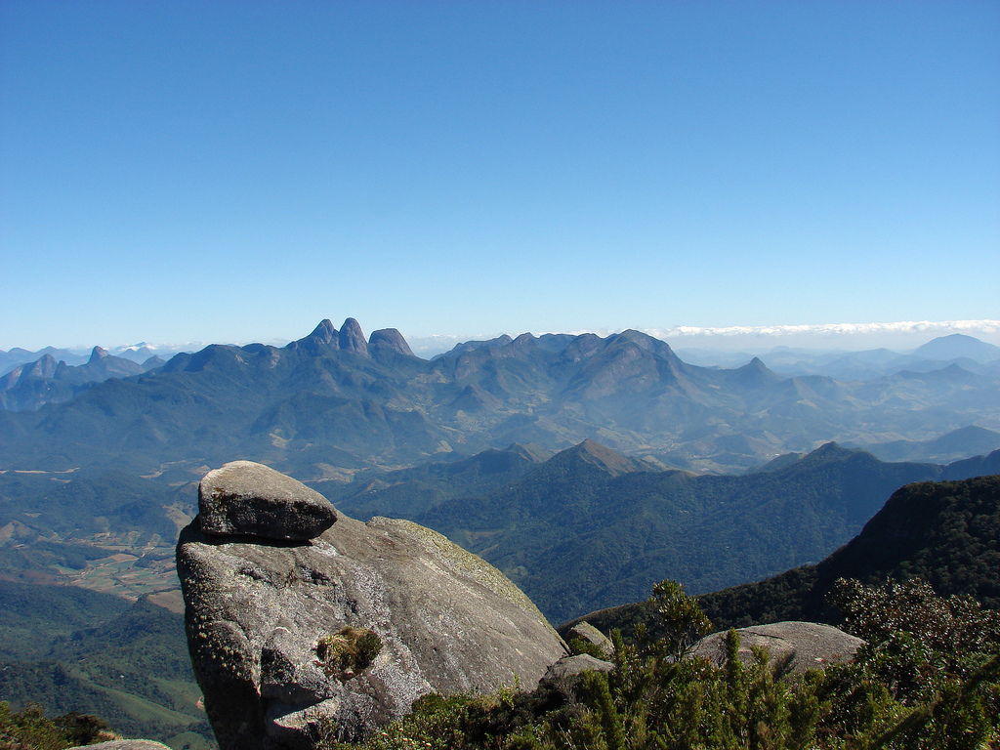
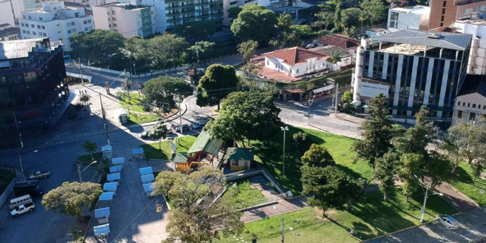
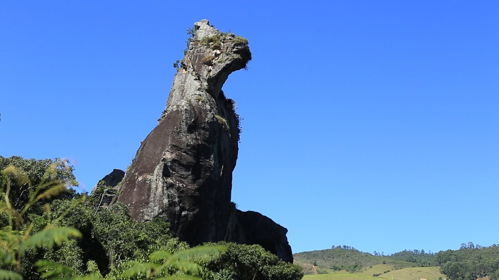
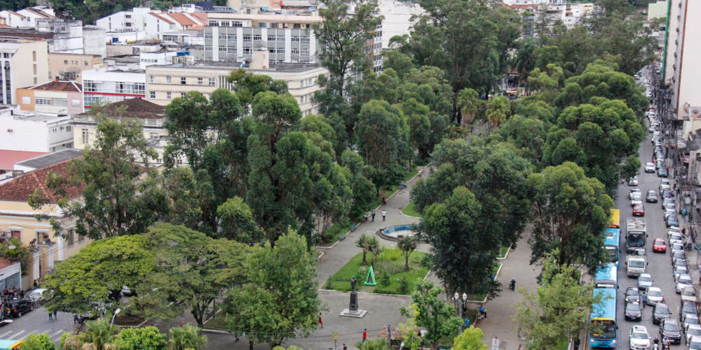
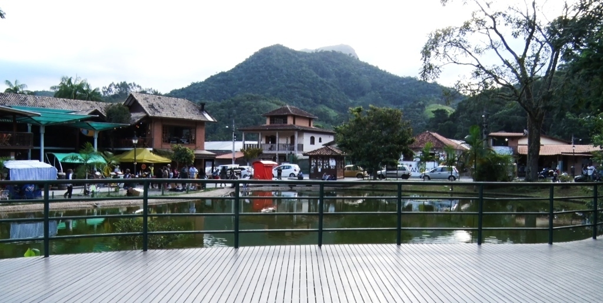

Pontos Turísticos
- Pico da Caledônia
- Praça do Suspiro e Teleférico
- Pedra do Cão Sentado
- Praça Getúlio Vargas
- Lumiar e São Pedro da Serra
Com mais de 2.200 metros de altitude, é um dos pontos mais altos da Serra do Mar. Oferece uma vista panorâmica incrível de toda a região e, em dias limpos, é possível avistar até a Baía de Guanabara.

Um dos locais mais tradicionais da cidade. Abriga a Capela de Santo Antônio, a Praça dos Trovadores e o famoso Teleférico, que leva os visitantes até o topo do Morro da Cruz.

Famosa formação rochosa que se assemelha à silhueta de um cão sentado. O parque oferece trilhas ecológicas, mirantes e atividades ao ar livre cercadas pela Mata Atlântica.

Tombada pelo patrimônio histórico, a praça principal da cidade se destaca por seus eucaliptos centenários, alamedas arborizadas e pelo clima bucólico no centro urbano.

Distritos charmosos conhecidos pelas cachoeiras cristalinas, gastronomia acolhedora, artesanato local e pelo ambiente perfeito para o ecoturismo e o descanso.
